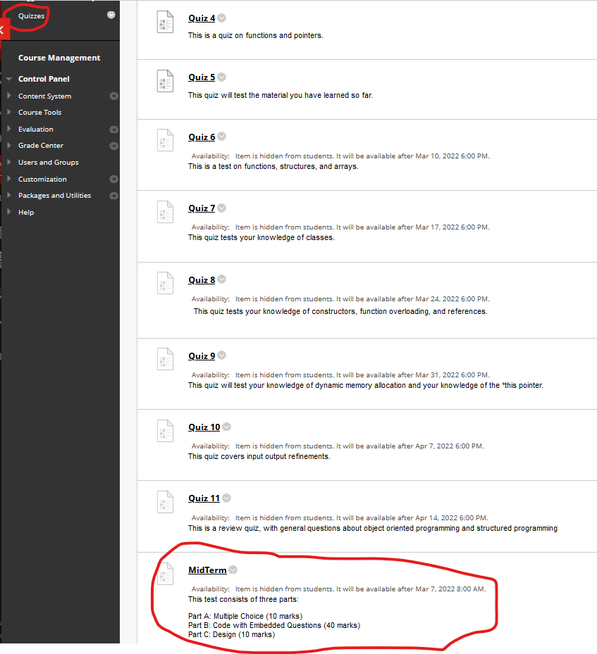

Midterm
- The midterm will open on BlackBoard at 8:00am EST on Monday March 7 and close at 11:59:59pm EST on Monday March 7. It can be found on BlackBoard under
Quizzes:

- You have 2 hours to complete the midterm and it must be completed in one sitting.
- Part A is worth 10 marks and consists of multiple choice questions.
- Part B is worth 40 marks and consists of questions embedded inside code which are duplicated on BlackBoard and must be answered on BlackBoard. The links to
the code can be found in the Description section of your midterm.
- Part C is worth 10 marks and consists of design. You are given a problem and you must design the structures and functions and show how they interact.